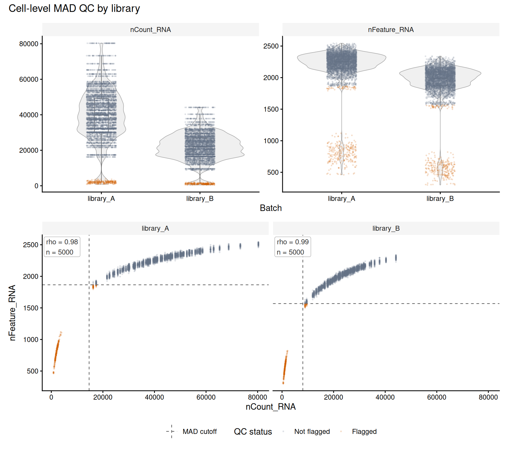

data("Bacher_param_preset", package = "SPARSim")
reference <- Bacher_param_preset[["Bacher_C1"]]
gene_subset <- sample(seq_along(reference$intensity), 5000L)
reference_intensity <- reference$intensity[gene_subset]
reference_variability <- reference$variability[gene_subset]
n_cells <- 5000L
low_depth_cells <- seq_len(n_cells %/% 20L)
library_size <- sample(reference$lib_size, n_cells, replace = TRUE)
library_size_A <- as.integer(round(library_size * 0.01))
library_size_B <- as.integer(round(library_size_A * 0.55))
library_size_A[low_depth_cells] <- round(library_size_A[low_depth_cells] * 0.05)
library_size_B[low_depth_cells] <- round(library_size_B[low_depth_cells] * 0.05)
library_size_A <- pmax(1L, library_size_A)
library_size_B <- pmax(1L, library_size_B)
cells_A <- paste0("library_A_cell_", seq_len(n_cells))
cells_B <- paste0("library_B_cell_", seq_len(n_cells))
parameter_A <- SPARSim::SPARSim_create_simulation_parameter(
intensity = reference_intensity,
variability = reference_variability,
library_size = library_size_A,
sample_names = cells_A,
condition_name = "library_A"
)
parameter_B <- SPARSim::SPARSim_create_simulation_parameter(
intensity = reference_intensity,
variability = reference_variability,
library_size = library_size_B,
sample_names = cells_B,
condition_name = "library_B"
)
simulation <- SPARSim::SPARSim_simulation(
dataset_parameter = list(library_A = parameter_A, library_B = parameter_B),
gene_expr_simulation_seed = 2718,
count_data_simulation_seed = 3141,
preserve_global_rng = TRUE
)
#> Number of experimental conditions: 2
#> Number of genes: 5000
#> Number of cells: 10000
#> Setting gene expression intensity...
#> Setting gene expression variability ...
#> Simulating biological variability ...
#> Simulating technical variability ...
counts <- simulation$count_matrix
stopifnot(
!is.null(colnames(counts)),
length(colnames(counts)) == 2L * n_cells,
!anyDuplicated(colnames(counts))
)plot_mad_qc() shows metric distributions and QC flags by group. plot_mad_qc_scatter() shows paired metrics, estimated MAD limits, and within-group Spearman rho. Both return ggplot objects. The violin, boxplot, cutoff, and composition choices draw on the scCustomize QC guide. For threshold interpretation and Seurat metadata, see Interpreting MAD QC flags.
SPARSim is hosted on GitLab. Install it with devtools::install_gitlab("sysbiobig/sparsim") before rendering this vignette. The simulator generates count data from expression intensity, variability, and library-size parameters (Baruzzo et al., 2020).
Simulate two libraries
The example uses 5,000 cells per library (10,000 total) and one Bacher preset, so both libraries share gene intensity and variability parameters. To keep rendering tractable, it samples 5,000 genes and sets read depth to 1% of the preset. Library B uses 55% of library A’s size; 5% of cells in each library have deliberately reduced size. These contrasts illustrate plotting and threshold behavior; they do not model general cell damage or benchmark biological QC.
SPARSim returns raw counts with genes in rows and cells in columns. Here, library size is the column sum and detected features are the number of nonzero genes in each column.
library_by_cell <- c(
stats::setNames(rep("library_A", n_cells), cells_A),
stats::setNames(rep("library_B", n_cells), cells_B)
)
low_depth_by_cell <- c(
stats::setNames(seq_len(n_cells) %in% low_depth_cells, cells_A),
stats::setNames(seq_len(n_cells) %in% low_depth_cells, cells_B)
)
qc_metadata <- data.frame(
library = unname(library_by_cell[colnames(counts)]),
nCount_RNA = colSums(counts),
nFeature_RNA = colSums(counts > 0),
known_low_depth = unname(low_depth_by_cell[colnames(counts)]),
row.names = colnames(counts)
)Annotate and inspect
Estimate lower-tail thresholds within each library. The log transformation reduces the influence of the long right tail in count-like metrics.
metrics <- c(nCount_RNA = "lower", nFeature_RNA = "lower")
transforms <- c(nCount_RNA = "log1p", nFeature_RNA = "log1p")
qc_annotated <- mad_qc(
qc_metadata,
metrics = metrics,
transform = transforms,
batch = qc_metadata$library,
verbose = FALSE
)
qc_report <- mad_qc(
qc_metadata,
metrics = metrics,
transform = transforms,
batch = qc_metadata$library,
output = "report",
verbose = FALSE
)
qc_report$thresholds[, c(
"metric", "batch", "lower_raw", "n_used", "n_flagged", "status"
)]
#> metric batch lower_raw n_used n_flagged status
#> 1 nCount_RNA library_A 14657.238 5000 250 ok
#> 2 nCount_RNA library_B 8060.770 5000 250 ok
#> 3 nFeature_RNA library_A 1865.846 5000 301 ok
#> 4 nFeature_RNA library_B 1568.392 5000 296 okThe table reports the raw-scale limits and flag counts for each library.
distribution_plot <- plot_mad_qc(
qc_annotated,
metrics = names(metrics),
batch = qc_metadata$library
) + ggplot2::theme(legend.position = "none")
relationship_plot <- plot_mad_qc_scatter(
qc_annotated,
x = "nCount_RNA",
y = "nFeature_RNA",
batch = qc_metadata$library,
report = qc_report
) + ggplot2::theme(legend.position = "bottom")
(
patchwork::wrap_plots(
distribution_plot,
relationship_plot,
ncol = 1
) + patchwork::plot_annotation(title = "Cell-level MAD QC by library")
)
The scatter plot shows how depth and detected features vary together within each library. Dashed lines mark estimated raw-scale limits. n counts cells with finite metric pairs; rho is descriptive and cells are not independent biological replicates.
The cross-tabulation shows how the combined MAD flag recovers planted low-depth cells and flags other cells in this run. These labels represent an imposed depth reduction, not general biological quality.
Warning
MAD flags describe statistical atypicality within the chosen reference group. Per-library thresholds can flag unusual cells within a library while missing a shift shared by most cells in one library. Review the distributions and threshold table before filtering, and use independent sample-level evidence to assess library-wide quality.